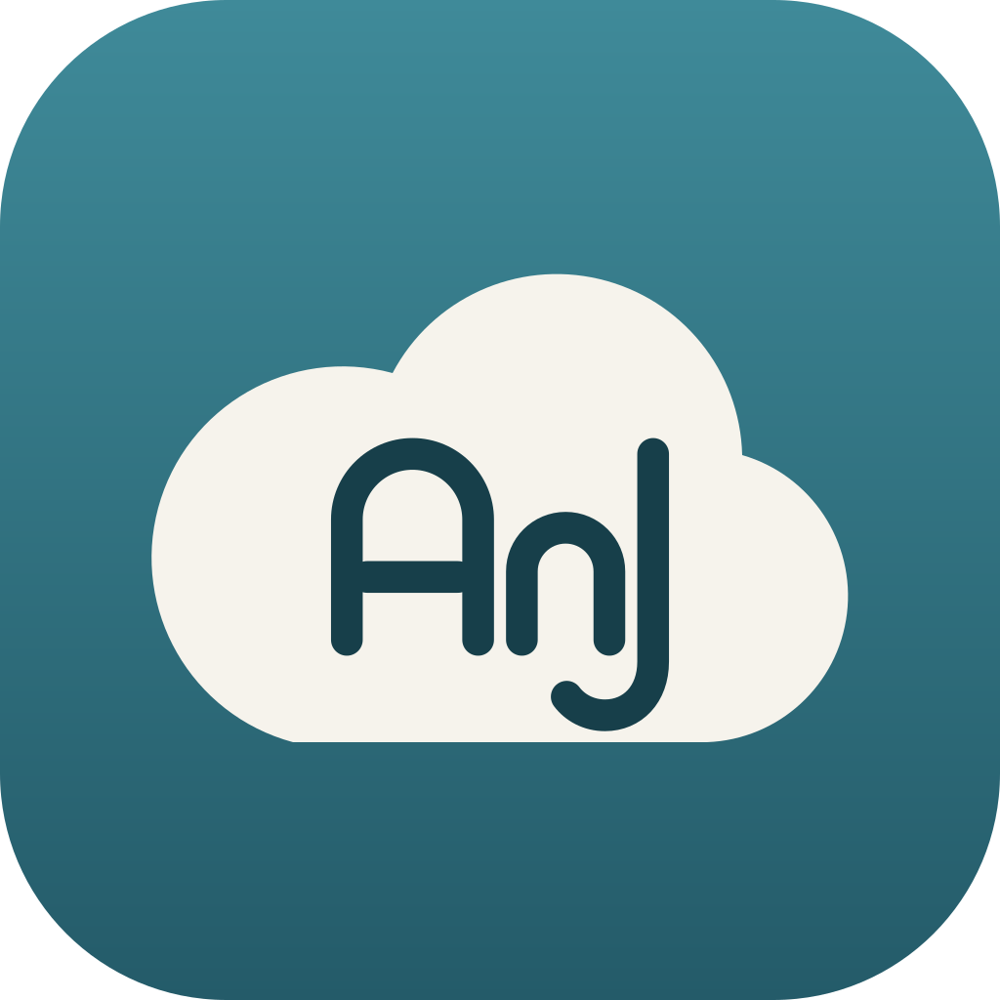
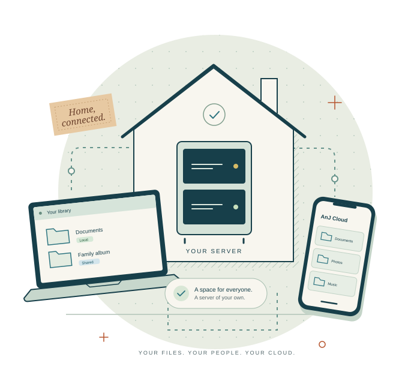
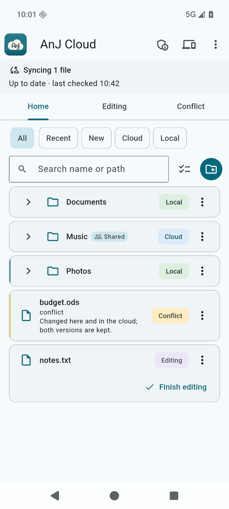
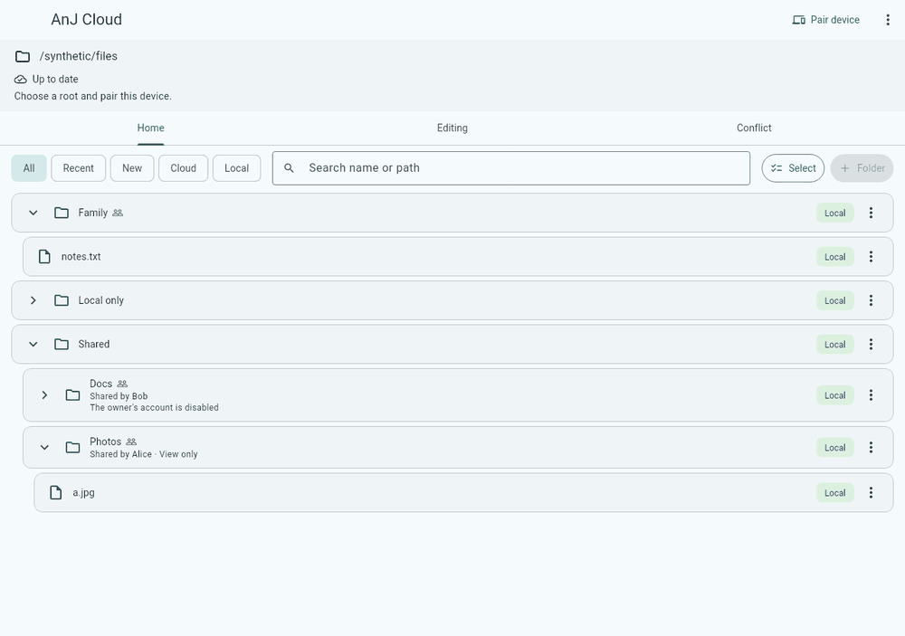
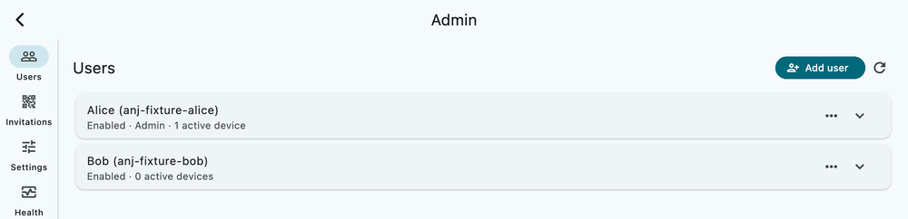

A server you own
Choose where your data lives and how much storage to give it. A Debian machine and Nextcloud form the foundation.

AnJ CloudA small cloud. A place of your own.
The everyday ease of a shared cloud, with the server in your hands. Keep your devices in sync, make room on your phone, and share a little corner with your household.
Open source · Built on Nextcloud · Made for a household

01 / Why it exists
Photos on a phone. Documents on a laptop. A folder everyone needs. AnJ Cloud brings those pieces together on infrastructure you choose.
It started with one household’s needs: familiar apps, separate accounts, straightforward sharing, and a clear answer to “where are our files?” You supply the server and storage. AnJ Cloud connects the people and devices.
Explore the open-source projectChoose where your data lives and how much storage to give it. A Debian machine and Nextcloud form the foundation.
Each household member has their own account. Share selected folders with read-only or edit access.
Invite a new device with a pairing code. See what is connected, and revoke access when a device leaves.
02 / Built for the everyday
The same library, with a choice about what takes up space on each device.
Freeing space and deleting are different actions. Deleting synchronized content can delete it in the cloud too. Conflicting edits keep both versions.

03 / Yours, mine, ours
A family album, a shared project, the paperwork for a trip. Give the right people access, and see who a folder belongs to. Everyone keeps their own account.

Search by name or path. Filter by recent, new, local, or cloud. See sharing and sync state where you work.
View full screenshot04 / A front door you control
A pairing code introduces each device to your server. Individual device credentials let an admin remove one device’s access without starting over.
Enter your server address and a one-time code. The code expires after ten minutes and checks your household’s certificate authority.
Household admins can manage users, invitations, devices, settings, health, and activity from the app.
TLS protects connections. Paired devices authenticate with their own certificates. Your server can read stored files; this is not end-to-end encrypted storage.

Private by control of the server, accounts, and access. Read the trust model
05 / Meet your devices where they are
Official builds are available for Linux, macOS, and Android. Each needs a running AnJ Cloud server and a pairing code.
x86_64
Installer, tray, start at login, and in-app updates.
Linux installationApple silicon
Installer, menu-bar item, and in-app updates. Ad-hoc signed; not notarized.
macOS installationarm64
Signed APK, QR pairing, and in-app updates.
Android installationx86_64 · Build from source
Installer available. No official binary or in-app updates yet.
Windows build guideBrowse releases & checksums Young software, built for one household first. Private inference access is planned, not implemented.
06 / Make yourself at home
Start with the server. Then bring your devices along.
The guided Debian installer checks the machine, shows its choices, and asks before formatting the blank data disk. The public guide walks through DNS, networking, setup, and first pairing.
Open the server quick start